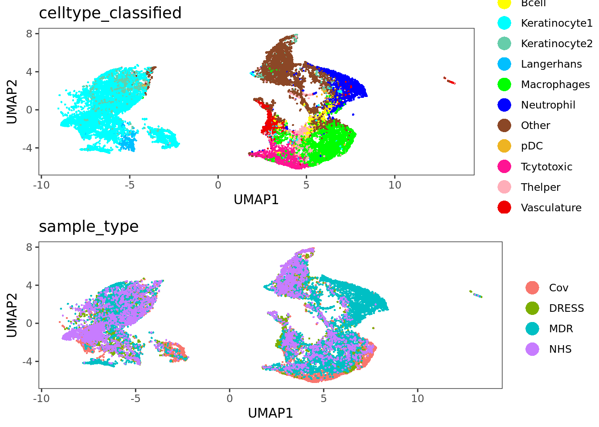
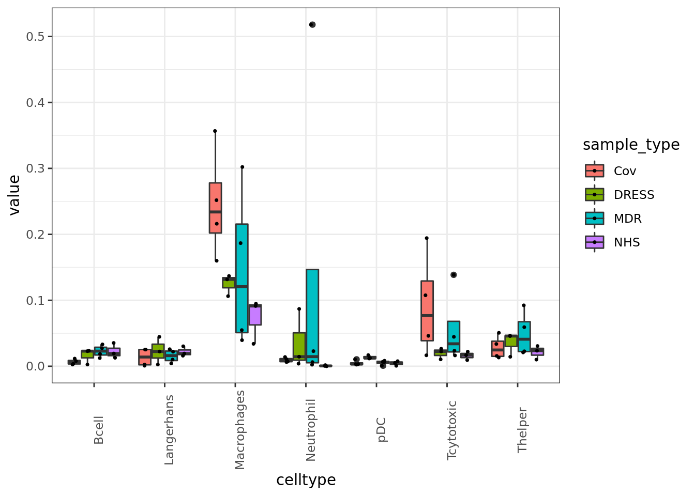

Plots for manuscript
daniels
7 9 2020
Last updated: 2021-03-23
Checks: 6 1
Knit directory: Mitamura_Schulz/
This reproducible R Markdown analysis was created with workflowr (version 1.6.2). The Checks tab describes the reproducibility checks that were applied when the results were created. The Past versions tab lists the development history.
The R Markdown file has unstaged changes. To know which version of the R Markdown file created these results, you’ll want to first commit it to the Git repo. If you’re still working on the analysis, you can ignore this warning. When you’re finished, you can run wflow_publish to commit the R Markdown file and build the HTML.
Great job! The global environment was empty. Objects defined in the global environment can affect the analysis in your R Markdown file in unknown ways. For reproduciblity it’s best to always run the code in an empty environment.
The command set.seed(20210322) was run prior to running the code in the R Markdown file. Setting a seed ensures that any results that rely on randomness, e.g. subsampling or permutations, are reproducible.
Great job! Recording the operating system, R version, and package versions is critical for reproducibility.
Nice! There were no cached chunks for this analysis, so you can be confident that you successfully produced the results during this run.
Great job! Using relative paths to the files within your workflowr project makes it easier to run your code on other machines.
Great! You are using Git for version control. Tracking code development and connecting the code version to the results is critical for reproducibility.
The results in this page were generated with repository version 1f66de5. See the Past versions tab to see a history of the changes made to the R Markdown and HTML files.
Note that you need to be careful to ensure that all relevant files for the analysis have been committed to Git prior to generating the results (you can use wflow_publish or wflow_git_commit). workflowr only checks the R Markdown file, but you know if there are other scripts or data files that it depends on. Below is the status of the Git repository when the results were generated:
Ignored files:
Ignored: .Rhistory
Ignored: .Rproj.user/
Ignored: analysis/.Rhistory
Ignored: pre_processing/
Unstaged changes:
Modified: analysis/05_fig_for_publication.Rmd
Modified: analysis/_site.yml
Note that any generated files, e.g. HTML, png, CSS, etc., are not included in this status report because it is ok for generated content to have uncommitted changes.
These are the previous versions of the repository in which changes were made to the R Markdown (analysis/05_fig_for_publication.Rmd) and HTML (docs/05_fig_for_publication.html) files. If you’ve configured a remote Git repository (see ?wflow_git_remote), click on the hyperlinks in the table below to view the files as they were in that past version.
| File | Version | Author | Date | Message |
|---|---|---|---|---|
| Rmd | 1f66de5 | SchulzDan | 2021-03-22 | analysis scripts functional. first version html |
| html | 1f66de5 | SchulzDan | 2021-03-22 | analysis scripts functional. first version html |
This script generates the plots for figures figures 2, 3 and supplementary 3 in Mitamura, Schulz et al. Also generates some additional plots.
load packages
plotCellFracGroups <- function(x,CellClass,color_by) {
# check if x is SingleCellExperiment
if (is.null(CellClass)) {
stop("Provide Cell class from column metadata")
}
# check if selected variables exist
entries <- colnames(colData(x))
if (! is.null(CellClass)) {
if (! CellClass %in% entries) {
stop("The entry for CellClass is not a colData slot of the object.")
}
}
# check if color_by does not exceed the number of images
if (! is.null(color_by)) {
if (! color_by %in% entries) {
stop("The entry for color_by is not a colData slot of the object.")
}
if (length(unique(colData(x)[,color_by])) > length(unique(x$ImageNumber))) {
stop("Number of colors selected not supported")
}
}
# create the data for plotting
cur_df <- data.frame( "ImageNumber" = as.factor(colData(x)[,"ImageNumber"]))
cur_df$CellClass <- as.factor(colData(x)[,CellClass])
cur_df$color_by <- as.factor(colData(x)[,color_by])
sum_df <- reshape2::dcast(cur_df, ImageNumber + color_by ~ CellClass, length)
# calculate the fractions for each cell type if color_by is not given
sum_df <- cbind(sum_df[c("ImageNumber", "color_by")],sum_df[-which(colnames(sum_df) %in% c("ImageNumber", "color_by"))]/rowSums(sum_df[-which(colnames(sum_df) %in% c("ImageNumber", "color_by"))]))
# melt data for plotting
frac_df <- reshape2::melt(sum_df,id.vars = c("ImageNumber", "color_by"),variable.name = CellClass)
colnames(frac_df) <- c("ImageNumber", color_by , CellClass , "value")
# plot data
ggplot(frac_df) +
geom_boxplot(aes_string(x=CellClass,y="value", fill=color_by),position=position_dodge(width=1)) +
geom_jitter(aes_string(x=CellClass,y="value", fill=color_by),position = position_dodge(width = 1),lwd=0.4) +
theme_bw()+
theme(axis.text.x = element_text(angle = 90, hjust = 1)) +
ylab("Fraction of celltype per Image")
}
scatter_x_y <- function(input_data,x,y,imagenumber,xlim,ylim, select_assay ="asinh"){
if (is.null(select_assay)) {
heatscatter(as.vector(t(assay(input_data[rownames(input_data) == x,input_data$ImageNumber == imagenumber],"asinh"))),as.vector(t(assay(input_data[rownames(input_data) == y,input_data$ImageNumber == imagenumber],"asinh"))),
xlab = paste("Imagenumber:",imagenumber , "Marker:" , x, sep = " "),
ylab = y,
xlim = xlim,
ylim = ylim,
main=(paste("Image number:", imagenumber,sep =" ")),
cor = TRUE,
method = "spearman")
} else {heatscatter(as.vector(t(assay(input_data[rownames(input_data) == x,input_data$ImageNumber == imagenumber],select_assay))),as.vector(t(assay(input_data[rownames(input_data) == y,input_data$ImageNumber == imagenumber],select_assay))),
xlab = paste("Imagenumber:",imagenumber , "Marker:" , x, sep = " "),
ylab = y,
xlim = xlim,
ylim = ylim,
main=(paste("Image number:", imagenumber,sep =" ")),
cor = TRUE,
method = "spearman")
}
}load data
sce = readRDS(file = "~/bbvolume/Data/Dermatology/covid_skin_rash/Rout/data/sce_protein.rds")
# here we exclude two samples from the downstream analysis. DRESS_4 is characterized by very thick layer of keratinocytes and does not contain any dermis. NHS_1 is a HC samples that contains my T cells and was a normal control sample that was taken to close to an area of disease.
sce <- sce[,! sce$sample %in% c("DRESS_4","NHS_1")]
colour_vector <- metadata(sce)$colour_vector$layer_1
image_mat <- as.data.frame(read.csv(file = "~/bbvolume/Data/Dermatology/covid_skin_rash/processed/cpout/Image.csv",stringsAsFactors = FALSE))
sample_colors <- c("#F8766D", "#7CAE00","#00BFC4","#C77CFF")
names(sample_colors) <- c("Cov","DRESS","MDR","NHS")rename samples
sce[,sce$sample == "MDR_1_lefstide"]$sample <- "MDR_1"
sce[,sce$sample == "Cov_1_top"]$sample <- "Cov_1"pdf("~/bbvolume/Data/Dermatology/covid_skin_rash/Rout/plots/cellfractions_classified.pdf",height = 10,width = 15)
plotCellFracGroups(sce,CellClass = "celltype_classified",color_by = "sample_type")Using color_by as value column: use value.var to override.dev.off()png
2 cur_df <- data.frame(ImageNumber = sce$ImageNumber,
celltype = sce$celltype_classified,
sample = sce$sample,
sample_type = sce$sample_type)
cur_df <- reshape2::dcast(data = cur_df,formula = "ImageNumber + sample + sample_type ~ celltype")Using sample_type as value column: use value.var to override.Aggregation function missing: defaulting to length# calculate the fracions of each celltype per image
freqs_wide <- as.data.frame(t(scale(t(as.matrix(cur_df[,-c(1,2,3)])), center = FALSE,
scale = rowSums(cur_df[,-c(1,2,3)]))))
freqs_wide$ImageNumber <- cur_df$ImageNumber
freqs_wide$sample <- cur_df$sample
freqs_wide$sample_type <- cur_df$sample_type
freqs_wide$celltype <- cur_df$celltype
freqs_long <- reshape2::melt(freqs_wide,id.vars = c("ImageNumber","sample", "sample_type"),measure.vars=unique(sce$celltype_classified))
freqs_long$celltype <- sapply(as.vector(freqs_long$variable),function(x){strsplit(x,"_",)[[1]][1]})immune_celltypes <- c("Tcytotoxic","Thelper","Macrophages","Neutrophil","pDC","Bcell","Langerhans", "TcytotoxicMyeloid","ThelperMyeloid")
vasculature_cells <- "Vasculature"immune_celltype_fractions <- freqs_long %>%
filter(celltype %in% immune_celltypes) %>%
arrange(celltype) %>%
ggplot()+
geom_boxplot(aes(x=celltype,y=value, fill=sample_type))+
geom_jitter(aes(x=celltype,y=value, fill=sample_type), position = position_jitterdodge(0.05), lwd=0.6)+
theme(axis.text.x = element_text(angle=90))+
theme_bw()+
theme(axis.text.x = element_text(angle=90))
pdf(file = "~/bbvolume/Data/Dermatology/covid_skin_rash/Rout/plots/cellfractions_classified_immune.pdf",width = 12,height = 10)
immune_celltype_fractions
dev.off()png
2 celltype_fractions_all <- freqs_long %>%
arrange(celltype) %>%
ggplot()+
geom_boxplot(aes(x=celltype,y=value, fill=sample_type))+
geom_jitter(aes(x=celltype,y=value, fill=sample_type), position = position_jitterdodge(0.05), lwd=0.6)+
theme(axis.text.x = element_text(angle=90))+
theme_bw()+
theme(axis.text.x = element_text(angle=90))+
scale_fill_manual(values = sample_colors)
pdf("~/bbvolume/Data/Dermatology/covid_skin_rash/Rout/plots/celltype_fractions_all.pdf", width = 12, height = 8)
celltype_fractions_all
dev.off()png
2 clustered celltypes classified boxplot per celltype
# calculate the fractions of all celltype
cur_df <- data.frame(ImageNumber = sce$ImageNumber,
celltype_clustering_FS = sce$celltype_classified_clustering_FS,
celltype = sce$celltype_classified,
sample = sce$sample,
sample_type = sce$sample_type)
cur_df <- reshape2::dcast(data = cur_df,formula = "ImageNumber + sample + sample_type ~ celltype_clustering_FS")
# calculate the fracions of each celltype per image
freqs_wide <- as.data.frame(t(scale(t(as.matrix(cur_df[,-c(1,2,3)])), center = FALSE,
scale = rowSums(cur_df[,-c(1,2,3)]))))
freqs_wide$ImageNumber <- cur_df$ImageNumber
freqs_wide$sample <- cur_df$sample
freqs_wide$sample_type <- cur_df$sample_type
freqs_wide$celltype <- cur_df$celltype
freqs_long <- reshape2::melt(freqs_wide,id.vars = c("ImageNumber","sample", "sample_type"),measure.vars=unique(sce$celltype_classified_clustering_FS), stringAsFactor= FALSE)
freqs_long$celltype <- sapply(as.vector(freqs_long$variable),function(x){strsplit(x,"_",)[[1]][1]})
freqs_long$cluster <- sapply(as.vector(freqs_long$variable),function(x){strsplit(x,"_",)[[1]][2]})for (i in unique(freqs_long$celltype)) {
p <- freqs_long %>%
filter(celltype == i) %>%
arrange(cluster,decreasing = FALSE) %>%
mutate(celltype = paste(i,cluster,sep="_")) %>%
ggplot()+
geom_boxplot(aes(x=celltype,y=value, fill=sample_type))+
geom_jitter(aes(x=celltype,y=value, fill=sample_type), position = position_jitterdodge(0.05), lwd=0.6)+
theme(axis.text.x = element_text(angle = 45, hjust = 1),
axis.title.x = element_blank(),
panel.background = element_blank(),
panel.grid.minor=element_blank(),
panel.grid.major.x=element_blank(),
panel.grid.major.y=element_line(color="grey", size=.3))+
scale_fill_manual(values = sample_colors)
pdf(file = paste0("~/bbvolume/Data/Dermatology/covid_skin_rash/Rout/plots/",i,"_classified_clustered.pdf"))
print(p)
dev.off()
}Marker expression of celltypes classified
agr_sce <- aggregateAcrossCells(sce, ids = colData(sce)[,c("celltype_classified")],
statistics = "mean")
assay(agr_sce, "asinh") <- asinh(counts(agr_sce))
plot_mat <- t(scale(t(assay(agr_sce,"asinh"))))
annotation_dat <- DataFrame(celltype = sce$celltype_classified)
annotation_dat <- as.data.frame(table(colData(sce)$celltype_classified))
row_ha = HeatmapAnnotation(size = anno_barplot(annotation_dat$Freq), celltype = annotation_dat$Var1,col=list(celltype = colour_vector))
pdf("~/bbvolume/Data/Dermatology/covid_skin_rash/Rout/plots/Marker_expression_celltype_classified_heatmap_with_annotation.pdf",width = 10,height = 10)
Heatmap(plot_mat,top_annotation = row_ha,height = unit(15,"cm"),width = unit(10,"cm"),cluster_columns = FALSE,
col = colorRamp2(c(-3, 0, 3), c("dark blue", "white", "dark red")),heatmap_legend_param = list(at = c(-3, 0, 3)))
dev.off()png
2 Marker expression of celltypes classified clustered
agr_sce <- aggregateAcrossCells(sce, ids = colData(sce)[,c("celltype_classified_clustering_FS")],
statistics = "mean")
assay(agr_sce, "asinh") <- asinh(counts(agr_sce))
plot_mat <- t(scale(t(assay(agr_sce,"asinh"))))
annotation_dat <- as.data.frame(table(colData(sce)$celltype_classified_clustering_FS))
annotation_dat$celltype <- sapply(X =annotation_dat$Var1,FUN = function(X){str_split(X,pattern = "_")[[1]][1]})
row_ha = HeatmapAnnotation(size = anno_barplot(annotation_dat$Freq), celltype = annotation_dat$celltype,col=list(celltype=colour_vector))
pdf("~/bbvolume/Data/Dermatology/covid_skin_rash/Rout/plots/Marker_expression_celltype_classified_clustered_heatmap_with_annotation.pdf",width = 15,height = 10)
Heatmap(plot_mat,top_annotation = row_ha,height = unit(15,"cm"),width = unit(20,"cm"),cluster_columns = FALSE,
col = colorRamp2(c(-3, 0, 3), c("dark blue", "white", "dark red")),heatmap_legend_param = list(at = c(-3, 0, 3)))
dev.off()png
2 Heatmap celltype classified clustered
agr_sce <- aggregateAcrossCells(sce, ids = colData(sce)[,c("celltype_classified_clustering_FS")],
statistics = "mean")
assay(agr_sce, "asinh") <- asinh(counts(agr_sce))
# Non-scaled
dittoHeatmap(agr_sce, assay = "asinh",
annot.by = c("celltype_classified_clustering_FS"),
order.by = "celltype_classified_clustering_FS", cluster_rows = FALSE,
scale = "none", heatmap.colors = viridis(100),
annotation_colors = list(celltype_classified = colour_vector))+theme(legend.position = "bottom")
| Version | Author | Date |
|---|---|---|
| 1f66de5 | SchulzDan | 2021-03-22 |
NULL# Centered and scaled
p <- dittoHeatmap(agr_sce, assay = "asinh",
annot.by = c("celltype_classified"),
annotation_colors = list(celltype_classified = colour_vector),
heatmap.colors = colorRampPalette(c("dark blue", "white", "dark red"))(100),
breaks = seq(-3,3, length.out = 101),show_colnames = TRUE)
| Version | Author | Date |
|---|---|---|
| 1f66de5 | SchulzDan | 2021-03-22 |
theme(axis.title.x = element_text("test"))List of 1
$ axis.title.x:List of 11
..$ family : chr "test"
..$ face : NULL
..$ colour : NULL
..$ size : NULL
..$ hjust : NULL
..$ vjust : NULL
..$ angle : NULL
..$ lineheight : NULL
..$ margin : NULL
..$ debug : NULL
..$ inherit.blank: logi FALSE
..- attr(*, "class")= chr [1:2] "element_text" "element"
- attr(*, "class")= chr [1:2] "theme" "gg"
- attr(*, "complete")= logi FALSE
- attr(*, "validate")= logi TRUEpdf(file = "~/bbvolume/Data/Dermatology/covid_skin_rash/Rout/plots/Marker_expr_heatmap_celltypes_classified_clustered_dittoHeatmap.pdf", width = 15, height = 10)
p
dev.off()png
2 Marker expression of celltypes classified split by indication
agr_sce <- aggregateAcrossCells(sce, ids = colData(sce)[,c("sample_type","celltype_classified")],
statistics = "mean")
assay(agr_sce, "asinh") <- asinh(counts(agr_sce))
plot_mat <- t(scale(t(assay(agr_sce,"asinh"))))
colnames(plot_mat) <- paste0(agr_sce$celltype_classified,"_",agr_sce$sample_type)
plot_mat <- plot_mat[,order(colnames(plot_mat))]
annotation_dat <- DataFrame(size = agr_sce$ncells,celltype = paste0(agr_sce$celltype_classified,"_",agr_sce$sample_type),sample_type = agr_sce$sample_type,celltype_cols =agr_sce$celltype_classified)
annotation_dat <- annotation_dat[order(annotation_dat$celltype),]
row_ha = HeatmapAnnotation(size = anno_barplot(annotation_dat$size),sample_type = annotation_dat$sample_type,celltype=annotation_dat$celltype_cols,col=list(celltype = colour_vector,sample_type = c("Cov"="#1B9E77","DRESS"="#D95F02","MDR" ="#7570B3", "NHS"= "#E7298A")))
pdf("~/bbvolume/Data/Dermatology/covid_skin_rash/Rout/plots/Marker_expression_celltype_classified__by_indication_heatmap_with_annotation.pdf",width = 15,height = 10)
Heatmap(plot_mat,top_annotation = row_ha,height = unit(15,"cm"),width = unit(20,"cm"),cluster_columns = FALSE,
col = colorRamp2(c(-3, 0, 3), c("dark blue", "white", "dark red")),heatmap_legend_param = list(at = c(-3, 0, 3)))
dev.off()png
2 agr_sce <- aggregateAcrossCells(sce, ids = colData(sce)[,c("sample_type","celltype_classified")],
statistics = "mean")
assay(agr_sce, "asinh") <- asinh(counts(agr_sce))
colnames(agr_sce) <- paste0(agr_sce$sample_type, "_", agr_sce$celltype_classified)
# Non-scaled
dittoHeatmap(agr_sce, assay = "asinh",
annot.by = c("sample_type","celltype_classified"),
order.by = "celltype_classified", cluster_rows = FALSE,
scale = "none", heatmap.colors = viridis(100),
annotation_colors = list(celltype_classified = colour_vector))
| Version | Author | Date |
|---|---|---|
| 1f66de5 | SchulzDan | 2021-03-22 |
# Centered and scaled
p <- dittoHeatmap(agr_sce, assay = "asinh",
annot.by = c("sample_type","celltype_classified"),
order.by = "celltype_classified",
annotation_colors = list(celltype_classified = colour_vector),
heatmap.colors = colorRampPalette(c("dark blue", "white", "dark red"))(100),
breaks = seq(-4,4, length.out = 101))
| Version | Author | Date |
|---|---|---|
| 1f66de5 | SchulzDan | 2021-03-22 |
pdf(file = "~/bbvolume/Data/Dermatology/covid_skin_rash/Rout/plots/Marker_expr_heatmap_celltypes_classified_by_indication.pdf", width = 10, height = 8)
p
dev.off()png
2 p1 <- dittoDimPlot(sce,var = "celltype_classified",color.panel = colour_vector, size = 0.5)
p2 <- dittoDimPlot(sce,var = "sample_type", size = 0.5, color.panel = sample_colors)
UMAP_plot <- plot_grid(p1,p2, ncol=1)
jpeg("~/bbvolume/Data/Dermatology/covid_skin_rash/Rout/plots/UMAP.jpeg",width = 2000,height = 3000,units = "px", res = 300)
plot_grid(p1,p2, ncol=1)
dev.off()png
2 Fig. 2
UMAP_plot
| Version | Author | Date |
|---|---|---|
| 1f66de5 | SchulzDan | 2021-03-22 |
immune_celltype_fractions
| Version | Author | Date |
|---|---|---|
| 1f66de5 | SchulzDan | 2021-03-22 |
sessionInfo()R version 4.0.2 (2020-06-22)
Platform: x86_64-pc-linux-gnu (64-bit)
Running under: Ubuntu 18.04.4 LTS
Matrix products: default
BLAS: /usr/lib/x86_64-linux-gnu/blas/libblas.so.3.7.1
LAPACK: /usr/lib/x86_64-linux-gnu/lapack/liblapack.so.3.7.1
locale:
[1] LC_CTYPE=C.UTF-8 LC_NUMERIC=C LC_TIME=C.UTF-8
[4] LC_COLLATE=C.UTF-8 LC_MONETARY=C.UTF-8 LC_MESSAGES=C.UTF-8
[7] LC_PAPER=C.UTF-8 LC_NAME=C LC_ADDRESS=C
[10] LC_TELEPHONE=C LC_MEASUREMENT=C.UTF-8 LC_IDENTIFICATION=C
attached base packages:
[1] grid parallel stats4 stats graphics grDevices utils
[8] datasets methods base
other attached packages:
[1] circlize_0.4.11 ggpubr_0.4.0
[3] ComplexHeatmap_2.6.2 cowplot_1.1.0
[5] dittoSeq_1.2.2 forcats_0.5.0
[7] stringr_1.4.0 dplyr_1.0.2
[9] purrr_0.3.4 readr_1.4.0
[11] tidyr_1.1.2 tibble_3.0.4
[13] tidyverse_1.3.0 data.table_1.13.2
[15] CATALYST_1.14.0 igraph_1.2.6
[17] Rphenograph_0.99.1.9001 viridis_0.5.1
[19] viridisLite_0.3.0 scater_1.18.3
[21] ggplot2_3.3.2 SingleCellExperiment_1.12.0
[23] SummarizedExperiment_1.20.0 Biobase_2.50.0
[25] GenomicRanges_1.42.0 GenomeInfoDb_1.26.1
[27] IRanges_2.24.0 S4Vectors_0.28.0
[29] BiocGenerics_0.36.0 MatrixGenerics_1.2.0
[31] matrixStats_0.57.0 LSD_4.1-0
[33] workflowr_1.6.2
loaded via a namespace (and not attached):
[1] tidyselect_1.1.0 BiocParallel_1.24.1
[3] Rtsne_0.15 aws.signature_0.6.0
[5] flowCore_2.2.0 munsell_0.5.0
[7] codetools_0.2-16 withr_2.3.0
[9] colorspace_2.0-0 knitr_1.30
[11] rstudioapi_0.13 largeVis_0.2.2
[13] ggsignif_0.6.0 labeling_0.4.2
[15] git2r_0.27.1 GenomeInfoDbData_1.2.4
[17] farver_2.0.3 pheatmap_1.0.12
[19] flowWorkspace_4.2.0 rprojroot_2.0.2
[21] vctrs_0.3.5 generics_0.1.0
[23] TH.data_1.0-10 xfun_0.19
[25] R6_2.5.0 ggbeeswarm_0.6.0
[27] clue_0.3-58 rsvd_1.0.3
[29] locfit_1.5-9.4 bitops_1.0-6
[31] DelayedArray_0.16.0 assertthat_0.2.1
[33] promises_1.1.1 scales_1.1.1
[35] multcomp_1.4-15 beeswarm_0.2.3
[37] gtable_0.3.0 beachmat_2.6.2
[39] Cairo_1.5-12.2 RProtoBufLib_2.2.0
[41] sandwich_3.0-0 rlang_0.4.9
[43] GlobalOptions_0.1.2 splines_4.0.2
[45] rstatix_0.6.0 hexbin_1.28.1
[47] broom_0.7.2 yaml_2.2.1
[49] reshape2_1.4.4 abind_1.4-5
[51] modelr_0.1.8 backports_1.2.0
[53] httpuv_1.5.4 RBGL_1.66.0
[55] tools_4.0.2 ellipsis_0.3.1
[57] RColorBrewer_1.1-2 ggridges_0.5.2
[59] Rcpp_1.0.5 plyr_1.8.6
[61] base64enc_0.1-3 sparseMatrixStats_1.2.0
[63] zlibbioc_1.36.0 RCurl_1.98-1.2
[65] FlowSOM_1.22.0 GetoptLong_1.0.4
[67] zoo_1.8-8 haven_2.3.1
[69] ggrepel_0.8.2 cluster_2.1.0
[71] fs_1.5.0 magrittr_2.0.1
[73] ncdfFlow_2.36.0 openxlsx_4.2.3
[75] reprex_0.3.0 RANN_2.6.1
[77] mvtnorm_1.1-1 whisker_0.4
[79] hms_0.5.3 evaluate_0.14
[81] XML_3.99-0.5 rio_0.5.16
[83] jpeg_0.1-8.1 readxl_1.3.1
[85] gridExtra_2.3 shape_1.4.5
[87] ggcyto_1.18.0 compiler_4.0.2
[89] crayon_1.3.4 htmltools_0.5.0
[91] later_1.1.0.1 RcppParallel_5.0.2
[93] lubridate_1.7.9.2 aws.s3_0.3.21
[95] DBI_1.1.0 dbplyr_2.0.0
[97] MASS_7.3-53 Matrix_1.2-18
[99] car_3.0-10 cli_2.2.0
[101] pkgconfig_2.0.3 foreign_0.8-80
[103] scuttle_1.0.3 xml2_1.3.2
[105] vipor_0.4.5 XVector_0.30.0
[107] drc_3.0-1 rvest_0.3.6
[109] digest_0.6.27 tsne_0.1-3
[111] ConsensusClusterPlus_1.54.0 graph_1.68.0
[113] rmarkdown_2.5 cellranger_1.1.0
[115] edgeR_3.32.0 DelayedMatrixStats_1.12.1
[117] curl_4.3 gtools_3.8.2
[119] rjson_0.2.20 lifecycle_0.2.0
[121] jsonlite_1.7.1 carData_3.0-4
[123] BiocNeighbors_1.8.1 limma_3.46.0
[125] fansi_0.4.1 pillar_1.4.7
[127] lattice_0.20-41 httr_1.4.2
[129] plotrix_3.7-8 survival_3.2-7
[131] glue_1.4.2 zip_2.1.1
[133] png_0.1-7 Rgraphviz_2.34.0
[135] stringi_1.5.3 nnls_1.4
[137] BiocSingular_1.6.0 CytoML_2.2.1
[139] latticeExtra_0.6-29 cytolib_2.2.0
[141] irlba_2.3.3